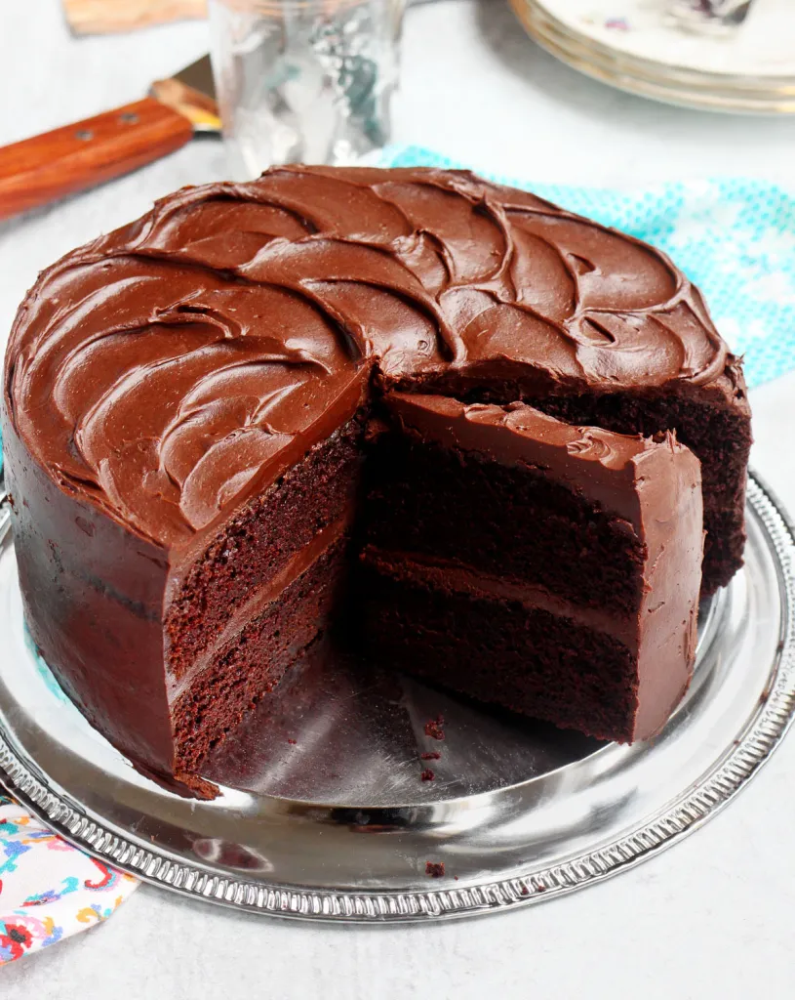

All the great chicken parmesan flavors, combined in one easy one pot pasta dish that's ready in 30 minutes! Less dishes, but a meal with maximum flavor!

Be sure to have some crusty bread on hand, because this sauce is KILLER. When it comes to chicken breast recipes, its hard to beat this one. The sauce is simple, but so flavorful. It's full of garlic, tomatoes, and most importantly, cream. It's bright and easy and just as good in the summer as it is in the winter. It's a great dinner for when you want comfort food and good enough to serve to dinner guests. We love it with bread, but you can also serve it over rice or pasta. If you love this as much as we do, try it our Tuscan Salmon next!
No word of a lie, this is THE BEST MOIST CHOCOLATE CAKE recipe on the internet. If you’ve been looking for it, then look no further… THIS IS IT! It’s so easy to make without a mixer and in one bowl, and it is incredibly chocolaty with the best chocolate fudge frosting.